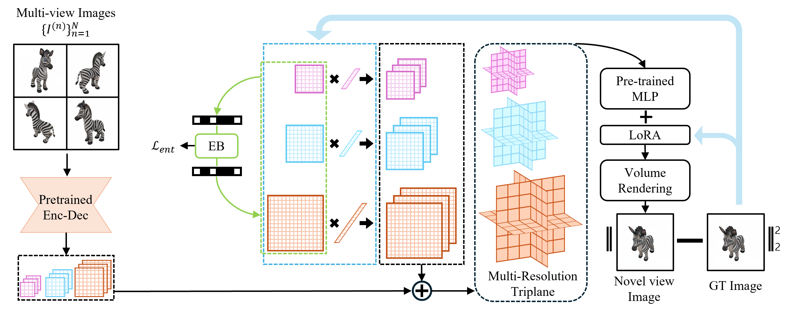

Abstract
Neural Radiance Fields (NeRF) have achieved huge success in effectively capturing and representing 3D objects and scenes. However, several factors have impeded its further proliferation as next-generation 3D media. To establish a ubiquitous presence in everyday media formats, such as images and videos, it is imperative to devise a solution that effectively fulfills three key objectives: fast encoding and decoding time, compact model sizes, and high-quality renderings. Despite significant advancements, a comprehensive algorithm that adequately addresses all objectives has yet to be fully realized. In this work, we present CodecNeRF, a neural codec for NeRF representations, consisting of a novel encoder and decoder architecture that can generate a NeRF representation in a single forward pass. Furthermore, inspired by the recent parameter-efficient finetuning approaches, we develop a novel finetuning method to efficiently adapt the generated NeRF representations to a new test instance, leading to high-quality image renderings and compact code sizes. The proposed CodecNeRF, a newly suggested encoding-decoding-finetuning pipeline for NeRF, achieved unprecedented compression performance of more than 150x and 20x reduction in encoding time while maintaining (or improving) the image quality on widely used 3D object datasets, such as ShapeNet and Objaverse.
Given N input images from different viewpoints, the goal is to produce a NeRF representation (multi-resolution triplanes). First, a 2D image feature extractor module processes all input images and generates 2D feature maps for each input image. hen, the unproject and aggregation module lifts the 2D features to 3D features and aggregates the unprojected 3D features into a single 3D feature. The 3D feature is further processed by axis-aligned average pooling along each axis, resulting in three 2D features. These 2D features are used to generate multi-resolution triplanes and finally, we perform the volumetric rendering to render an image using MLP. Furthermore, 2D features are compressed by the compression module, producing the minimal sizes of the codes to be transmitted. The entire pipeline is differentiable, and we train end-to-end to optimize all learnable parameters.
Similar to other NeRF generalization models, our approach can also leverage fine-tuning of NeRF representations to enhance visual quality for new scenes during testing time. We propose to adapt parameter-efficient finetuning (PEFT) in our test time optimization. We first generate multi-resolution triplanes using multi-view test images, and train only the triplanes and decoder in a efficient way. Also, we leverage neural compression methods that have demonstrated efficacy in image and video domains to seek to achieve the optimal compression rate. We adopt a fully factorized density model to our proposed parameter-efficient finetuning of the triplanes and MLP.
We visualize the delta feature maps across finetuning iterations using our entropy coding method. The feature maps following the entropy coding, eliminate unnecessary components across the different resolutions, and sequentially get a high compression ratio resulting from quantization. The histogram shows the progress of compression during finetuning stage.
For the quantitative metrics, we report the standard image quality measurements, PSNR, SSIM, and MS-SSIM. We also measure the storage requirements of the representation to show the compression performance of our method. Our parameter efficient methods show that only with 150x memory we can store or transmit the 3D representation with better quality compared to the baseline method. Due to the improved generalization capability of our method, we outperform the per-scene optimization-based baseline, Triplanes, in novel view synthesis. Remarkably, the PEFT method showed comparable or better performance across the data with fewer trainable parameters.
@misc{kang2024codecnerf,
title={CodecNeRF: Toward Fast Encoding and Decoding, Compact, and High-quality Novel-view Synthesis},
author={Gyeongjin Kang and Younggeun Lee and Eunbyung Park},
year={2024},
eprint={2404.04913},
archivePrefix={arXiv},
primaryClass={cs.CV}
}